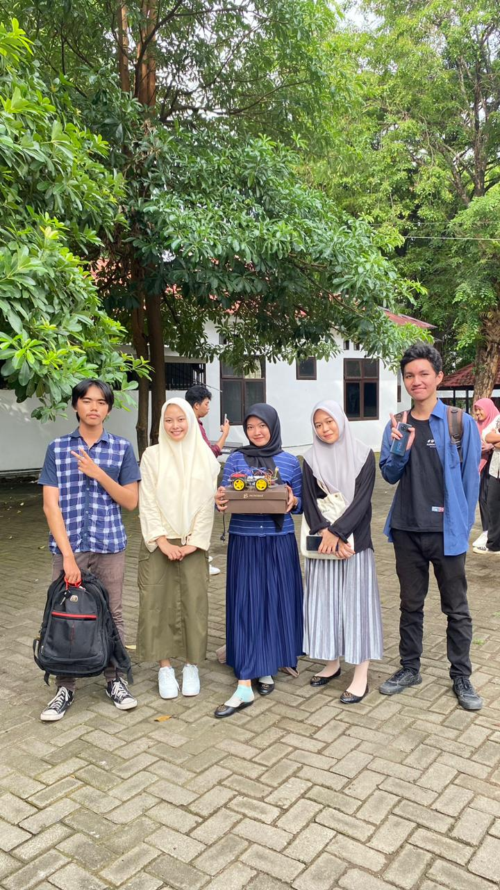

universitas negeri makassar
"Everything happens for a reason "
Pengalaman Selama Perkuliahan di Tekom |
| Pengalaman Selama Perkuliahan di TEKOM yaitu belajar banyak mengenai pemrograman seperti kode program,cara menyelesaikan masalah menggunakan bahasa pemrograman, flowchart, juga membuat web dan masih banyak lainnya. Dan saya juga belajar banyak hal baru dan memiliki banyak teman baru. Dengan memiliki teman baru dari berbagai daerah juga memberikan wawasan baru. |
Mata Kuliah1. Pemrograman Lanjut2. Pemrograman Web 3. Analisis dan Desain Algoritme |
Daftar Nama Dosen
|
|
FOTO  |